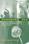
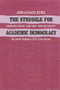
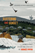

Browse
other Titles:
A B C
D E F
G H I
J K L
M N O
P Q R
S T U
V W X
Y Z |

|
Salsa World
A Global Dance in Local Contexts
edited by Hutchinson, Sydney
240 pp • 6x9 • Fall 2013
paper 978-1-4399-1007-8
cloth 978-1-4399-1006-1 |
 |
Samuel
Joseph May and the Dilemmas of the Liberal Persuasion, 1797-1871
Yacovone,
Donald 300 pp • Spring 1991
cloth 978-0-87722-760-1 |

|
San Francisco's International Hotel
Mobilizing the Filipino American Community in the Anti-Eviction Movement
Habal, Estella
256 pp • 6x9 • Spring 2008
paper 978-1-59213-446-5
cloth 978-1-59213-445-8
|
|
Savage Portrayals
Race, Media, and the Central Park Jogger Story
Byfield, Natalie
P.
242 pp • 6x9 • Fall 2013
paper 978-1-4399-0634-7
cloth 978-1-4399-0633-0 |

|
Saving San Francisco
Relief and Recovery after the 1906 Disaster
Davies, Andrea Rees
232 pp • 6x9 • Fall 2011
paper 978-1-4399-0433-6
cloth 978-1-4399-0432-9
|
|
Saving
the Waifs
Ashby,
LeRoy Spring 1984
cloth 978-0-87722-337-5 |

|
Savoring the Salt
The Legacy of Toni Cade Bambara
edited by Holmes, Linda Janet and Cheryl A. Wall
320 pp • 6x9 • Fall 2007
paper 978-1-59213-625-4
cloth 978-1-59213-624-7
|
 |
Schooling
for "Good Rebels"
Socialist Education for Children in the United States, 1900-1920
Teitelbaum,
Kenneth 304 pp • 6x9 • Fall
1992
cloth 978-0-87722-980-3 |
 |
Schooling
Without Labels
Parents, Educators, and Inclusive Education
Biklen,
Douglas 210 pp • Fall 1991
paper 978-0-87722-876-9
cloth 978-0-87722-875-2 |
|
Schools
and Social Justice
Connell,
R. W. 144 pp • 5x8.25 • Fall
1993
paper 978-1-56639-138-2
cloth 978-1-56639-137-5
|
 |
Schopenhauer
The Human Character
Atwell,
John E. 259 pp • 5x8 • Fall
1990
cloth 978-0-87722-748-9
|
 |
Science
that Colonizes
A Critique of Fertility Studies in Africa
Riedmann,
Agnes 192 pp • 6x9 • Spring
1993
cloth 978-1-56639-042-2 |
 |
The Scrapbook in American Life
edited
by Tucker, Susan, Katherine Ott and Patricia P. Buckler 344
pp • 7x10 • Spring 2006
paper 978-1-59213-478-6
cloth 978-1-59213-477-9
|
 |
Search
for Government Efficiency
From Hubris to Helplessness
Downs,
George W. and Patrick D. Larkey 252
pp • Fall 1985
cloth 978-0-87722-409-9 |

|
Searching for Mr. Chin
Constructions of Nation and the Chinese in West Indian Literature
Lee-Loy, Anne-Marie
198 pp • 5.5x8.25 • Spring 2010
cloth 978-1-43990-130-4
|
 |
Searching
for Safe Spaces
Afro-Caribbean Women Writers in Exile
Chancy,
Myriam J. A. 272 pp • 6x9 •
Fall 1997
paper 978-1-56639-540-3
cloth 978-1-56639-539-7
|
 |
Second Cities
Globalization and Local Politics in Manchester and Philadelphia
Hodos, Jerome 264 pp • 6x9 • Spring 2011
paper 978-1-4399-0232-5
cloth 978-1-4399-0231-8
|
 |
Seeing
New York
History Walks for Armchair and Footloose Travelers
Cooke,
Hope 464 pp • 6x9 • Spring
1995
paper 978-1-56639-289-1
cloth 978-1-56639-288-4 |
 |
Seeking
Community in a Global City
Guatemalans and Salvadorans in Los Angeles
Hamilton,
Nora and Norma Stoltz Chinchilla 304
pp • 6x9 • Spring 2001
paper 978-1-56639-868-8
cloth 978-1-56639-867-1
|
 |
Seeking
Mandela
Peacemaking Between Israelis and Palestinians
Adam,
Heribert and Kogila Moodley 248 pp •
6x9 • Spring 2005
paper 978-1-59213-396-3
cloth 978-1-59213-395-6
|

|
Selecting Women, Electing Women
Political Representation and Candidate Selection in Latin America
Hinojosa, Magda
240 pp • 6x9 • Fall 2012
paper 978-1-4399-0848-8
cloth 978-1-4399-0847-1
|
|
Self-Determination without Nationalism
A Theory of Postnational Sovereignty
Dahbour, Omar
272 pp • 6x9 • Fall
2012
paper 978-1-4399-0075-8
cloth 978-1-4399-0074-1
|

|
Selling Transracial Adoption
Families, Markets, and the Color Line
Raleigh, Elizabeth
274 pp • 6x9 • Fall 2017
paper 978-1-4399-1478-6
cloth 978-1-4399-1477-9
|
|
Selma's
Peacemaker
Ralph Smeltzer and Civil Rights Mediation
Longenecker,
Steve L. 288 pp • Fall 1987
cloth 978-0-87722-489-1 |
 |
Senior Power or Senior Peril
Aged Communities and American Society in the Twenty-First Century
Bramlett, Brittany H. 168
pp • 5.5x8.250 • Fall 2014
paper 978-1-43991-134-1
cloth 978-1-43991-133-4 |
|
The
Sense of Self
A Guide to How We Mature
Stringer,
Lorene A. 170 pp • Spring 1971
cloth 978-0-87722-008-4 |

|
Separate Societies
Poverty and Inequality in U.S. Cities
Second Edition
Goldsmith, William W. and Edward J. Blakely
268 pp • 6x9 • Spring 2010
paper 978-1-43990-292-9
cloth 978-1-43990-291-2
|
 |
Serial Fu Manchu
The Chinese Supervillain and the Spread of Yellow Peril Ideology
Mayer, Ruth
216 pp • 6x9 • Fall 2013
paper 978-1-4399-1056-6
cloth 978-1-4399-1055-9 |

|
Sesqui!
Greed, Graft, and the Forgotten World's Fair of 1926
Keels, Thomas H.
400 pp • 6x9 • Fall 2016
cloth 978-1-4399-0329-2 |
 |
Sex and the Founding Fathers
The American Quest for a Relatable Past
Foster, Thomas A.
New in Paperback!
232 pp • 6x9 • Fall 2016
paper 978-1-4399-1103-7
cloth 978-1-4399-1102-0 |
 |
Sexology and Translation
Cultural and Scientific Encounters across the Modern World
edited by Bauer, Heike
284 pp • 6x9 • Fall 2015
paper 978-1-4399-1249-2
cloth 978-1-4399-1248-5 |
 |
Sexual
Cultures and the Construction of Adolescent Identities
edited
by Irvine, Janice M. 336 pp • 6x9
• Spring 1994
paper 978-1-56639-136-8
cloth 978-1-56639-135-1
|
 |
Sexual
Strangers
Gays, Lesbians, and Dilemmas of Citizenship
Phelan,
Shane 232 pp • 6x9 • Fall
2000
paper 978-1-56639-828-2
cloth 978-1-56639-827-5
|
|
Shades
of Black
Diversity in African American Identity
Cross,
Jr., William E. 296 pp • Spring
1991
paper 978-0-87722-949-0
cloth 978-0-87722-759-5 |
 |
Shadows
on the Past
Studies in the Historical Fiction Film
Grindon,
Leger 264 pp • 6x9 • Spring
1994
paper 978-1-56639-182-5
cloth 978-1-56639-181-8
|
 |
Shaming the Constitution
The Detrimental Results of Sexual Violent Predator Legislation
Perlin, Michael L., and Heather Ellis Cucolo
324 pp • 6x9 • Spring 2017
paper 978-1-4399-1292-8
cloth 978-1-4399-1291-1
|
 |
Shantytown
Protest in Pinochet's Chile
Schneider,
Cathy Lisa 296 pp • 5.5x8.25 •
Spring 1995
paper 978-1-56639-306-5
cloth 978-1-56639-305-8
|
 |
Shelter
Burden
Local Politics and Progressive Housing Policy
Goetz,
Edward G. 264 pp • 5.5x8.25 •
Fall 1993
cloth 978-1-56639-055-2 |
 |
Shelter
Poverty
New Ideas on Housing Affordability
Stone,
Michael E. 384 pp • 6x9 •
Spring 1993
paper 978-1-56639-092-7
cloth 978-1-56639-050-7
|
|
She's Got a Gun
Floyd, Nancy
256 pp • 7x10 • Fall 2007
paper 978-1-59213-155-6
cloth 978-1-59213-154-9
|
 |
Shifting
Borders
Rhetoric, Immigration, and California's Proposition 187
Ono,
Kent A. and John M. Sloop 264 pp •
6x9 • Fall 2001
paper 978-1-56639-917-3
cloth 978-1-56639-916-6
|
|
The
Sign of the Burger
McDonald's and the Culture of Power
Kincheloe,
Joe L. 240 pp • 5.5x8.25 •
Fall 2001
paper 978-1-56639-932-6
cloth 978-1-56639-931-9
|

|
Silent Gesture
Smith, Tommie with David Steele
288 pp • 6x9 • Spring 2008
paper 978-1-59213-640-7
cloth 978-1-59123-639-1
|
 |
Silent
Rights
The Ninth Amendment and the Constitution's Unenumerated Rights
Massey,
Calvin R. 288 pp • 5.5x8.25 •
Fall 1995
paper 978-1-56639-312-6
cloth 978-1-56639-311-9 |
 |
Silicone
Survivors
Women's Experiences with Breast Implants
Zimmermann,
Susan M. 240 pp • 6x9 • Spring
1998
paper 978-1-56639-612-7
cloth 978-1-56639-611-0
|
 |
Silver
Cities
The Photography of American Urbanization, 1839-1915
Hales,
Peter Bacon 315 pp • Fall 1983
paper 978-0-87722-399-3
cloth 978-0-87722-299-6 |
 |
Sins
of the Parents
The Politics of National Apologies in the United States
Weiner,
Brian A. 256 pp • 5.5x8.25 •
Spring 2005
paper 978-1-59213-318-5
cloth 978-1-59213-317-8
|
|
Sisterhood
and Solidarity
Workers' Education for Women, 1914-1984
Frederickson,
Mary and Joyce L. Kornbluh Fall 1984
cloth 978-0-87722-328-3 |
 |
Sisterhood
Denied
Race, Gender, and Class in a New South Community
Janiewski,
Dolores E. 272 pp • 6x9 •
Fall 1984
paper 978-1-56639-006-4
cloth 978-0-87722-361-0 |
 |
Sisters
on Screen
Siblings in Contemporary Cinema
Rueschmann,
Eva 304 pp • 6x9 • Fall 1999
paper 978-1-56639-747-6
cloth 978-1-56639-746-9
|
 |
The
Sixties Experience
Hard Lessons About Modern America
Morgan,
Edward P., foreword by Howard P. Zinn 357
pp • 6x9 • Spring 1991
paper 978-1-56639-014-9
cloth 978-0-87722-805-9
|
 |
The
Skeptical Visionary
A Seymour Sarason Education Reader
edited
by Fried, Robert L., Seymour Sarason 312
pp • 7x10 • Fall 2002
paper 978-1-56639-980-7
cloth 978-1-56639-979-1
|
 |
Skepticism
and Political Participation
Botwinick,
Aryeh 256 pp • Fall 1989
cloth 978-0-87722-657-4 |
|
SLAPPs
Getting Sued for Speaking Out
Pring,
George W. and Penelope Canan 296 pp
• 6x9 • Fall 1995
paper 978-1-56639-369-0
cloth 978-1-56639-368-3
|

|
The
Smoke of the Gods
A Social History of Tobacco
Burns, Eric
296 pp • 6x9 • Fall 2006
cloth 978-1-59213-480-9
|
 |
Smuggled
Chinese
Clandestine Immigration to the United States
Chin,
Ko-lin, foreword by Douglas S. Massey 296
pp • 6x9 • Fall 1999
paper 978-1-56639-733-9
cloth 978-1-56639-732-2
|
 |
Soap
Fans
Pursuing Pleasure and Making Meaning in Everyday Life
Harrington,
C. Lee and Denise D. Bielby 240 pp •
6x9 • Fall 1995
paper 978-1-56639-330-0
cloth 978-1-56639-329-4
|
|
Soccer in a Football World
The Story of America's Forgotten Game
Wangerin, David
360 pp • 5.25x8.5 • Spring 2008
paper 978-1-59213-885-2
|
 |
Social
Capital in the City
Community and Civic Life in Philadelphia
edited
by Dilworth, Richardson 256 pp • 6x9
• Spring 2006
paper 978-1-59213-345-1
cloth 978-1-59213-344-4
|
|
Social
Darwinism
Science and Myth in Anglo-American Social Thought
Bannister,
Robert C. 292 pp • Fall 1988
paper 978-0-87722-566-9
cloth 978-0-87722-155-5
|
|
The
Social Gospel
Religion and Reform in Changing America
White,
Jr., Ronald C. and C. Howard Hopkins Spring
1975
paper 978-0-87722-084-8
cloth 978-0-87722-083-1
|
 |
Social
Inequality in Oaxaca
A History of Resistance and Change
Murphy,
Arthur D. and Alex Stepick, foreword by Henry A. Selby
300 pp • Fall 1991
paper 978-0-87722-869-1
cloth 978-0-87722-868-4
|
|
Social
Justice and Church Authority
The Public Life of Archbishop Robert E. Lucey
Bronder,
Saul E. 244 pp • Fall 1981
cloth 978-0-87722-239-2 |
 |
Social Justice in Diverse Suburbs
History, Politics, and Prospects
edited by Niedt, Christopher
276 pp • 6x9 • Spring 2013
paper 978-1-4399-1050-4
cloth 978-1-4399-1049-8 |
 |
The
Social Logic of Politics
Personal Networks as Contexts for Political Behavior
edited
by Zuckerman, Alan S. 368 pp •
6x9 • Spring 2005
paper 978-1-59213-148-8
cloth 978-1-59213-147-1
|
 |
Social
Movements and Political Power
Emerging Forms of Radicalism in the West
Boggs,
Carl 304 pp • 6x9 • Fall 1986
paper 978-0-87722-622-2
cloth 978-0-87722-447-1
|
|
The
Social Origins of Democratic Socialism in Jamaica
Keith,
Nelson W. and Novella Z. Keith 352 pp
• 6x9 • Spring 1992
cloth 978-0-87722-906-3 |
|
Social
Service Politics in the United States and Britain
Richan,
Willard C. 290 pp • Spring 1981
cloth 978-0-87722-216-3 |
 |
Society
and Legal Change
Watson,
Alan, foreword by Paul Finkelman
168
pp • 5.5x8.25 • Fall 2001
paper 978-1-56639-920-3
cloth 978-1-56639-919-7
|
|
Society
and Nature
Towards a Green Social Theory
Dickens,
Peter 300 pp • 6x9 • Spring
1992
paper 978-0-87722-969-8
cloth 978-0-87722-968-1 |
 |
Socio-Medical
Inquiries
Recollections, Reflections, and Reconsiderations
Zola,
Irving Kenneth 340 pp • Spring
1983
paper 978-0-87722-312-2
cloth 978-0-87722-303-0 |
 |
Softly, with Feeling
Joe Wilder and the Breaking of Barriers in American Music
Berger, Edward
400 pp • 6x9 •
Spring 2014
cloth 978-1-4399-1127-3 |
 |
The
Solicitor General
The Politics of Law
Salokar,
Rebecca Mae 250 pp • 6x9 •
Spring 1992
paper 978-1-56639-260-0
cloth 978-0-87722-926-1 |
 |
Solidarity
and the Politics of Anti-Politics
Opposition and Reform in Poland since 1968
Ost,
David 272 pp • Fall 1989
paper 978-0-87722-900-1
cloth 978-0-87722-655-0 |

|
Somalis in the Twin Cities and Columbus
Immigrant Incorporation in New Destinations
Chambers, Stefanie
250 pp • 5.5x8.25 • Spring 2017
paper 978-1-4399-1442-7
cloth 978-1-4399-1441-0
|
 |
Something
Left to Lose
Personal Relations and Survival among New York's Homeless
Dordick,
Gwendolyn A. 224 pp • 5.5x8.25
• Spring 1997
paper 978-1-56639-514-4
cloth 978-1-56639-513-7 |
 |
Songs
of the Caged, Songs of the Free
Music and the Vietnamese Refugee Experience
Reyes,
Adelaida 248 pp • 5.5x8.25 •
Spring 1999
paper 978-1-56639-686-8
cloth 978-1-56639-685-1
|
 |
Sonic Spaces of the Karoo
The Sacred Music of a South African Coloured Community
Jorritsma, Marie 224 pp • 6x9 • Spring 2011
cloth 978-1-4399-0237-0 |
 |
The
Sons and Daughters of Los
Culture and Community in L.A.
edited
by James, David E. 264 pp • 7x10
• Spring 2003
paper 978-1-59213-013-9
cloth 978-1-59213-012-2
|

|
The
Sorcery of Color
Identity, Race, and Gender in Brazil
Nascimento, Elisa Larkin
336 pp • 6x9 • Fall 2006
paper 978-1-59213-351-2
cloth 978-1-59213-350-5
|
 |
The
Souls of the Skyscraper
Female Clerical Workers in Chicago, 1870-1930
Fine,
Lisa M. 264 pp • Spring 1990
cloth 978-0-87722-674-1 |
 |
Sound
Sentiment
An Essay on the Musical Emotions
Kivy,
Peter, foreword by Joseph Margolis 304
pp • Fall 1989
paper 978-0-87722-677-2
cloth 978-0-87722-641-3 |
|
Sound
Tracks
A Musical ABC, Volumes 1-3
Jarrett,
Michael 304 pp • 5.5x9 • Fall
1998
cloth 978-1-56639-641-7
|
 |
Sounding Off
Rhythm, Music, and Identity in West African and Caribbean Francophone Novels
Huntington, Julie
256 pp • 6x9 • Fall 2009
cloth 978-1-4399-0031-4
|
|
Sounding Salsa
Performing Popular Latin Dance Music in New York City
Washburne, Christopher
272 pp • 6x9 • Spring 2008
paper 978-1-59213-316-1
cloth 978-1-59213-315-4
|
 |
Sounds of the Modern Nation
Music, Culture, and Ideas in Post-Revolutionary Mexico
Madrid, Alejandro L.
224 pp • 5.25x8.25• Fall 2008
cloth 978-1-59213-694-0
|
 |
South
Philadelphia
Mummers, Memories, and the Melrose Diner
Dubin,
Murray 248 pp • 8.5x11 • Spring
1996
cloth 978-1-56639-429-1 |
 |
Sparks
from the Anvil of Oppression
Philadelphia's African Methodists and Southern Migrants, 1890-1940
Gregg,
Robert 272 pp • 6x9 • Fall
1993
paper 978-1-56639-664-6
cloth 978-1-56639-063-7 |
|
Speaking of Race and Class
The Student Experience at an Elite College
Aries, Elizabeth, with Richard Berman 238 pp • 6x9 • Fall
2012
paper 978-1-4399-0967-6
cloth 978-1-4399-0966-9
|
|
Special
Education Policies
Their History, Implementation, and Finance
Chambers,
Jay G. and William T. Hartman 301 pp
• Fall 1982
cloth 978-0-87722-280-4 |
|
Specular
City
Transforming Culture, Consumption, and Space in Buenos Aires,
1955-1973
Podalsky,
Laura 304 pp • 6x9 • Fall
2003
paper 978-1-56639-948-7
cloth 978-1-56639-947-0
|
 |
The SPHAS
The Life and Times of Basketball's Greatest Jewish Team
Stark, Doug, Foreword by Lynn Sherr 344 pp • 6x9 • Spring 2011
cloth 978-1-59213-633-9
|

|
The Spike Lee Reader
edited by Massood, Paula J.
312 pp • 6x9 • Fall 2007
paper 978-1-59213-485-4
cloth 978-1-59213-484-7
|
 |
The
Spirits of America
A Social History of Alcohol
Burns,
Eric 344 pp • 6x9 • Fall 2003
paper 978-1-59213-269-0
cloth 978-1-59213-214-0
|
 |
Spirits,
Blood, and Drums
The Orisha Religion in Trinidad
Houk,
James T. 256 pp • 5.5x8.25 •
Fall 1995
paper 978-1-56639-350-8
cloth 978-1-56639-349-2
|
 |
Sponsored
Identities
Cultural Politics in Puerto Rico
Dvila,
Arlene M. 301 pp • 5.5x8.25 •
Fall 1997
paper 978-1-56639-549-6
cloth 978-1-56639-548-9
|
 |
The
Sponsored Life
Ads, TV, and American Culture
Savan,
Leslie 368 pp • 6x9 • Fall
1994
paper 978-1-56639-245-7
cloth 978-1-56639-244-0
|
 |
Spontaneous
Shelter
International Perspectives and Prospects
edited
by Patton, Carl V. 256 pp • Fall
1987
cloth 978-0-87722-507-2 |
 |
Sport and Neoliberalism
Politics, Consumption, and Culture
edited by Andrews, David L., and Michael L. Silk
322 pp • 6x9 • Fall 2012
paper 978-1-4399-0504-3
cloth 978-1-4399-0503-6
|
 |
Sportista
Female Fandom in the United States
Markovits, Andrei S., and Emily Albertson
268 pp • 6x9 • Fall 2012
paper 978-1-4399-0964-5
cloth 978-1-4399-0963-8
|
|
Sportsex
Miller,
Toby 192 pp • 6x9 • Fall 2002
paper 978-1-56639-994-4
cloth 978-1-56639-864-0
|
 |
St.
Louis
The Evolution of an American Urban Landscape
Sandweiss,
Eric 296 pp • 7x10 • Spring
2001
paper 978-1-56639-886-2
cloth 978-1-56639-885-5
|

|
St. Peter's Church
Faith in Action for 250 Years
Biddle, Cordelia Frances, Elizabeth S. Browne, Alan J. Heavens and Charles P. Peitz
264 pp • 8x10 • Fall 2011
cloth 978-1-43990-795-5 |
 |
Stacked
Deck
A Story of Selfishness in America
Mitchell,
Lawrence E. 264 pp • 6x9 •
Spring 1998
cloth 978-1-56639-592-2 |
|
Staging
Strikes
Workers' Theatre and the American Labor Movement
Hyman,
Collette A. 224 pp • 5.5x8.25 •
Spring 1997
cloth 978-1-56639-504-5
|
 |
Stan
Brakhage
Filmmaker
edited
by James, David E. 248 pp • 6x9
• Spring 2005
paper 978-1-59213-272-0
cloth 978-1-59213-271-3
|
 |
Starting
Out
Class and Community in the Lives of Working-Class Youth
Steinitz,
Victoria Anne and Ellen Rachel Solomon 248
pp • Fall 1986
paper 978-0-87722-620-8
cloth 978-0-87722-430-3
|
 |
States,
Labor Markets, and the Future of Old-Age Policy
edited
by Myles, John and Jill Quadagno 340
pp • Spring 1991
cloth 978-0-87722-790-8 |
 |
The Steelers Encyclopedia
Finder, Chuck
336 pp • 8.375x10.875 • Fall 2012
cloth 978-1-4399-0832-7
|
 |
Still
Philadelphia
A Photographic History, 1890-1940
Miller,
Fredric M., Morris J. Vogel and Allen F. Davis 312
pp • 8x10 • Spring 1983
cloth 978-0-87722-306-1
|
 |
Still
the Big News
Racial Oppression in America
Blauner,
Bob 288 pp • 6x9 • Spring
2001
paper 978-1-56639-874-9
cloth 978-1-56639-873-2
|

|
The Story Is True
The Art and Meaning of Telling Stories
Jackson, Bruce
256 pp • 5.5x8.25 • Spring 2007
paper 978-1-59123-607-0
cloth 978-1-59123-606-3
|
 |
The
Story of Reo Joe
Work, Kin, and Community in Autotown, U.S.A.
Fine,
Lisa M. 256 pp • 6x9 • Spring
2004
paper 978-1-59213-258-4
cloth 978-1-59213-257-7
|
 |
Storytelling
in Daily Life
Performing Narrative
Langellier,
Kristin M. and Eric E. Peterson 288
pp • 7x10 • Fall 2003
paper 978-1-59213-213-3
cloth 978-1-59213-212-6
|
 |
The Strange Music of Social Life
A Dialogue on Dialogic Sociology
Bell, Michael Mayerfeld, edited by Ann Goetting 248 pp • 5.5x8.25 • Spring 2011
paper 978-1-4399-0724-5
cloth 978-1-4399-0723-8
|
|
Strange
Philadelphia
Stories from the City of Brotherly Love
Harry,
Lou with Michael Strickland 240 pp
• 5.5x8.25 • Fall 1995
paper 978-1-56639-375-1 |
 |
Street
Addicts in the Political Economy
Waterston,
Alisse 304 pp • 5.5x8.25 •
Fall 1992
paper 978-1-56639-574-8
cloth 978-0-87722-992-6 |
 |
Street
Woman
Miller,
Eleanor M. 216 pp • Spring 1986
paper 978-0-87722-509-6
cloth 978-0-87722-417-4 |
 |
Striking
Steel
Solidarity Remembered
Metzgar,
Jack 320 pp • 6x9 • Fall 1999
paper 978-1-56639-739-1
cloth 978-1-56639-738-4
|
|  |
The
Struggle for Academic Democracy
Lessons from the 1938 Revolution in New York's City Colleges
Edel,
Abraham 240 pp • Spring 1990
cloth 978-0-87722-691-8 |
 |
The
Struggle for Control of Public Education
Market Ideology vs. Democratic Values
Engel,
Michael 223 pp • 5.5x8.25 •
Fall 1999
paper 978-1-56639-741-4
cloth 978-1-56639-740-7 |
 |
Struggling State
Nationalism, Mass Militarization, and the Education of Eritrea
Riggan, Jennifer
258 pp • 6x9 • Spring 2016
cloth 978-1-4399-1270-6
|
|
Studies
in Philosophy for Children
Harry Stottlemeier's Discovery
edited
by Sharp, Ann Margaret and Ronald F. Reed 268
pp • Fall 1991
paper 978-0-87722-873-8
cloth 978-0-87722-872-1 |
 |
The
Study of Religion in an Age of Global Dialogue
Swidler,
Leonard and Paul Mojzes 240 pp •
6x9 • Fall 2000
paper 978-1-56639-793-3
cloth 978-1-56639-792-6 |
 |
The
Suburban Racial Dilemma
Housing and Neighborhoods
Keating,
W. Dennis 288 pp • 6x9 • Spring
1994
paper 978-1-56639-148-1
cloth 978-1-56639-147-4
|
 |
Sudden
Death and the Myth of CPR
Timmermans,
Stefan, foreword by Bern Shen 272 pp
• 6x9 • Fall 1999
paper 978-1-56639-716-2
cloth 978-1-56639-715-5
|
|  |
Suffering and Sunset
World War I in the Art and Life of Horace Pippin
Bernier, Celeste-Marie
New in Paperback!
552 pp • 6.125x9.25 • Fall 2017
paper 978-1-4399-1274-4
cloth 978-1-4399-1273-7 |
|
Sufficiency
of Hope
Conceptual Foundations of Religion
Muyskens,
James L. 170 pp • Fall 1979
cloth 978-0-87722-162-3 |

|
Suicide Squeeze
Taylor Hooton, Rob Garibaldi, and the Fight against Teenage Steroid Abuse
Kashatus, William C.
266 pp • 6x9 • Fall 2016
cloth 978-1-4399-1438-0 |
|
The
Sum of Our Parts
Mixed-Heritage Asian Americans
edited
by Williams-Len, Teresa and Cynthia L. Nakashima, foreword
by Michael Omi 296 pp • 7x10 •
Fall 2000
paper 978-1-56639-847-3
cloth 978-1-56639-846-6
|
 |
Surrogates
and Other Mothers
The Debates over Assisted Reproduction
Macklin,
Ruth 264 pp • 6x9 • Spring
1994
paper 978-1-56639-180-1
cloth 978-1-56639-179-5
|

|
Surviving
Mexico's Dirty War
A Political Prisoner's Memoir
Ulloa Bornemann, Alberto, edited by Arthur Schmidt and Aurora
Camacho de Schmidt
232 pp • 6x9 • Fall 2006
paper 978-1-59213-423-6
cloth 978-1-59213-422-9
|
 |
Suspect Citizens
Women, Virtue, and Vice in Backlash Politics
Boryczka, Jocelyn M.
216 pp • 5.5x8.25 • Fall 2012
paper 978-1-4399-0894-5
cloth 978-1-4399-0893-8
|
|
Sustainable Failures
Environmental Policy and Democracy in a Petro-dependent World
Cable, Sherry
242 pp • 6x9 • Fall 2012
paper 978-1-43990-900-3
cloth 978-1-43990-899-0
|
|
Sweating Saris
Indian Dance as Transnational Labor
Srinivasan, Priya
238 pp • 6x9 • Fall 2011
paper 978-1-4399-0430-5
cloth 978-1-4399-0429-9
|
 |
Swimming Against the Tide
African American Girls and Science Education
Hanson,
Sandra L.
224 pp • 5.5x8.25 • Fall 2008
paper 978-1-59213-622-3
cloth 978-1-59213-621-6
|
 |
Swing
Era New York
The Jazz Photographs of Charles Peterson
Stokes,
W. Royal, photographs by Don Peterson, foreword by Stanley Dance
232 pp • 10x8 • Fall 1994
paper 978-1-56639-464-2
cloth 978-1-56639-227-3 |
 |
Swingin'
at the Savoy
The Memoir of a Jazz Dancer
Miller,
Norma with Evette Jensen 304 pp •
6x9 • Spring 2001
paper 978-1-56639-849-7
|

|
Sync
Stylistics of Hieroglyphic Time
Tobias, James
304 pp • 6x9 • Spring 2010
cloth 978-1-4399-0201-1
|